关键词为“治疗”的文章
1-
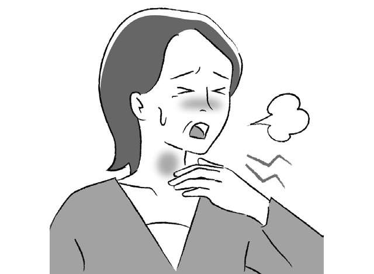
低压扰乱自主神经，浑身不舒服…… 发布日期：请注意，呼吸急促可能是心脏或肺部疾病的早期症状。心脏病学...
-
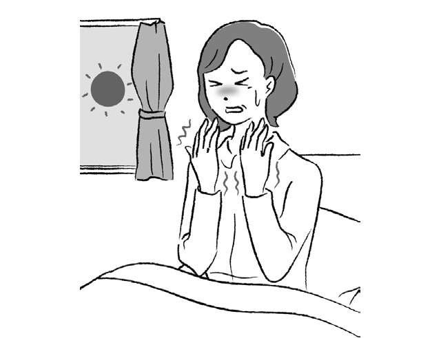
低压扰乱自主神经，浑身不舒服…… 发布日期：我们请教了铃木大阳教授！改善50岁以上女性常见的“手部僵硬”...
-
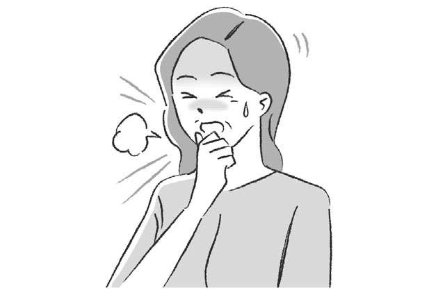
低压扰乱自主神经，浑身不舒服…… 发布日期：专家松濑敦人医生为您讲解“哮喘”！老年妇女更容易患重病...
-
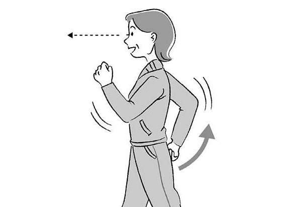
低压扰乱自主神经，浑身不舒服…… 发布日期：心力衰竭前期的心脏肥大，可以通过生活习惯来应对！猪俣教授向我们讲述心脏的健康......
-
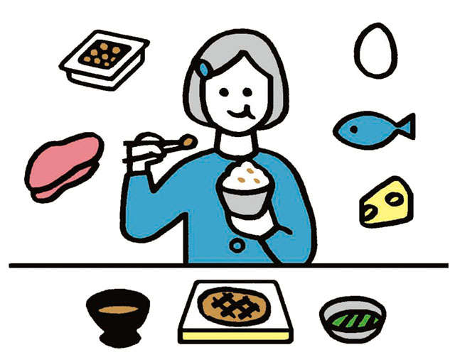
低压扰乱自主神经，浑身不舒服…… 发布日期：躺下看智能手机也很危险！ “可以通过改善生活习惯来应对新的青光眼症状”
-
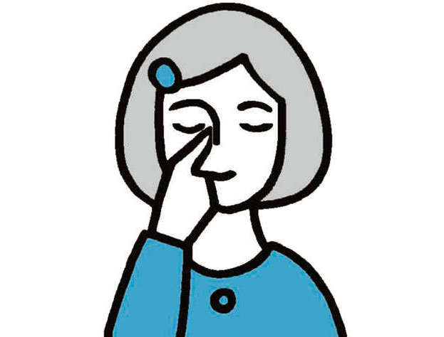
低压扰乱自主神经，浑身不舒服…… 发布日期：最新手术、眼药水的正确使用方法等医生传授的“青光眼新常识”
-
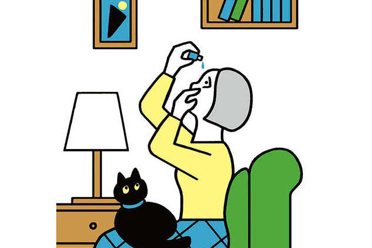
低压扰乱自主神经，浑身不舒服…… 发布日期：40岁以上的人需要每两年检测一次！与生活方式相关的疾病也是一种风险。 “新发青光眼...
-
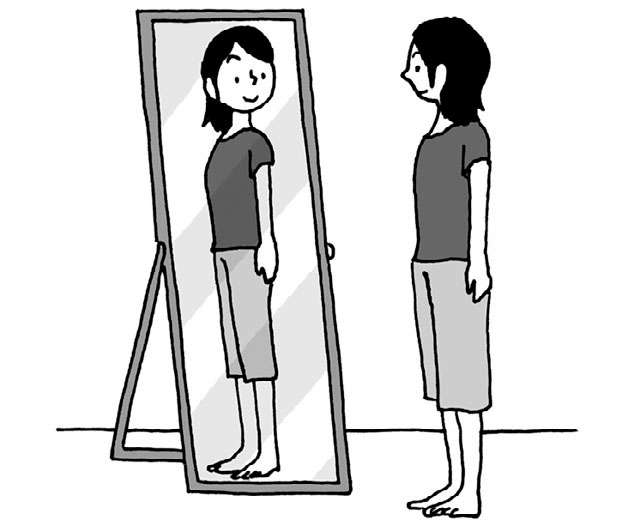
低压扰乱自主神经，浑身不舒服…… 发布日期：重要的是要针对病因进行治疗和处理！当你感到肩部不适时的自我诊断...
-
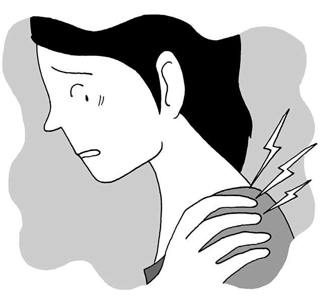
低压扰乱自主神经，浑身不舒服…… 发布日期：The number one symptom reported by women!自查“肩酸”、“肩部不适”
-
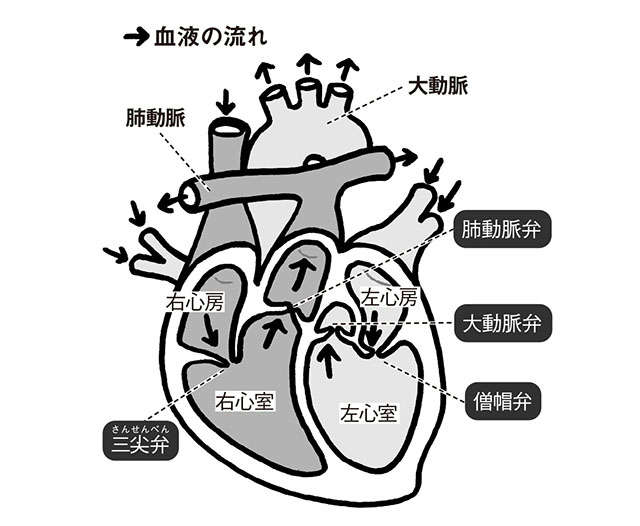
低压扰乱自主神经，浑身不舒服…… 发布日期：呼吸急促和胸痛可能是生病的征兆！由于衰老而产生的“心脏瓣膜病”...
-
低压扰乱自主神经，浑身不舒服…… 发布日期：
“治疗衰老”时代即将来临！？消除衰老细胞和衰老的“药”...
-
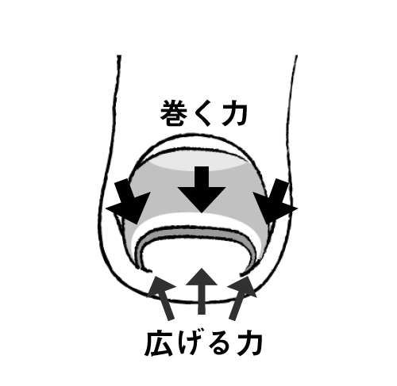
低压扰乱自主神经，浑身不舒服…… 发布日期：对于内生的指甲，日常自我护理很重要。通过多种治疗方法改善疼痛